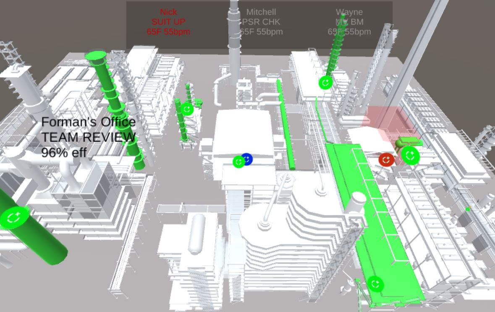

DEMOS
over space and time
Viral Contact Tracing

Modelling person tracking and interactions over time for viral contact points.
Design for MutualAid.world's SafeTrace API and CoronaDonor.org
Wild Cacao Fair-Trading


Modelling ecological growth, supplier certification, and other farmer processes.
Design for Yellow Seed
Stadium Management

Maintence and utility team co-operation, tasking and safty.
Design for CAP Science Labs
Factory Management

Factory status, team co-operation, tasking and safty.
Design for CAP Science Labs